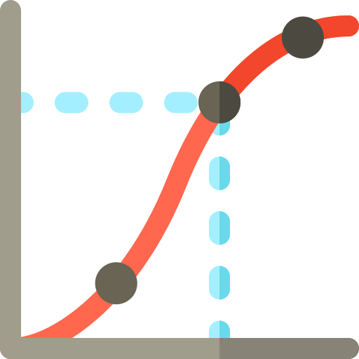
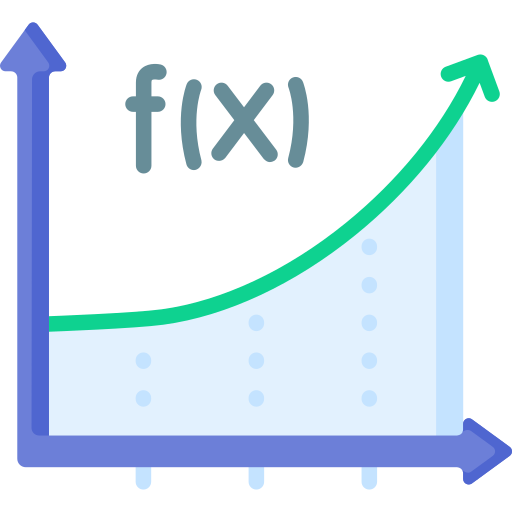

Curso de introducción a las derivadas
Hay un mundo antes y después de la derivada. En este curso conocerás el
concepto de derivada
partiendo del limite. Derivarás por definición y por regla utilizando la tabla de derivadas.
Aprenderás algunas propiedades
como la regla de la cadena y el teorema del "sandwich" y finalmente analizarás el comportamiento
de las funciones mediante
el criterio de la primera y segunda derivada.
Temario:
- La recta secante y tangente en un punto.
- Límite y pendiente de la recta tangente en un punto.
- Derivada por definición.
- Derivada por regla y tabla de derivadas.
- Derivada del producto y del cociente de funciones.
- Derivada de una función compuesta. Regla de la cadena.
- Derivada de sen(x) / x. Teorema del "Sandwich".
- Criterio de la primera y segunda derivada.
- Analisis de funciones: puntos críticos e intervalos de crecimiento y decrecimiento
- Evaluación

Curso de introducción a las Integrales
Las integrales son una parte esencial del cálculo y se utilizan en una amplia variedad de
disciplinas, como la física, la ingeniería, la economía y la estadística, entre otras. En este curso aprenderás a hallar la función
primitiva o antiderivada de una función dada utilizando la tabla de integrales y algunas propiedades como la integración por sustitución y
la integración por partes.
Temario:
- Derivada y antiderivada.
- Partes de una integral: integrando y diferencial de integración.
- Integrales indefinidas.
- Integral de una constante por una función.
- Integral de la suma y de la resta de funciones.
- Integración por sustitución.
- Integración por partes.
- Evaluación.
Curso de Cálculo Integral
Existen dos tipos principales de integrales: la integral definida y la integral indefinida.
La integral definida se utiliza para calcular el área exacta bajo una curva en un intervalo específico. En este curso se continuará
con lo visto en el Curso de Introducción a las Integrales para calcular áreas bajo y entre curvas y resolver integrales con limites infinitos.
Temario:
- Aproximación de areas: la suma de Riemann.
- Los límites de integración.
- El teorema fundamental del Cálculo Integral.
- Área bajo la curva.
- Área entre dos curvas.
- Límites de integración infinitos.
- Integrales impropias.
- Evaluación.
